Table of Contents
1. Introduction
The Double Ratchet algorithm is used by two parties to exchange encrypted messages based on a shared secret key. Typically the parties will use some key agreement protocol (such as X3DH [1]) to agree on the shared secret key. Following this, the parties will use the Double Ratchet to send and receive encrypted messages.
The parties derive new keys for every Double Ratchet message so that earlier keys cannot be calculated from later ones. The parties also send Diffie-Hellman public values attached to their messages. The results of Diffie-Hellman calculations are mixed into the derived keys so that later keys cannot be calculated from earlier ones. These properties gives some protection to earlier or later encrypted messages in case of a compromise of a party's keys.
The Double Ratchet and its header encryption variant are presented below, and their security properties are discussed.
2. Overview
2.1. KDF chains
A KDF chain is a core concept in the Double Ratchet algorithm.
We define a KDF as a cryptographic function that takes a secret and random KDF key and some input data and returns output data. The output data is indistinguishable from random provided the key isn't known (i.e. a KDF satisfies the requirements of a cryptographic "PRF"). If the key is not secret and random, the KDF should still provide a secure cryptographic hash of its key and input data. The HMAC and HKDF constructions, when instantiated with a secure hash algorithm, meet the KDF definition [2], [3].
We use the term KDF chain when some of the output from a KDF is used as an output key and some is used to replace the KDF key, which can then be used with another input. The below diagram represents a KDF chain processing three inputs and producing three output keys:

A KDF chain has the following properties (using terminology adapted from [4]):
Resilience: The output keys appear random to an adversary without knowledge of the KDF keys. This is true even if the adversary can control the KDF inputs.
Forward security: Output keys from the past appear random to an adversary who learns the KDF key at some point in time.
Break-in recovery: Future output keys appear random to an adversary who learns the KDF key at some point in time, provided that future inputs have added sufficient entropy.
In a Double Ratchet session between Alice and Bob each party stores a KDF key for three chains: a root chain, a sending chain, and a receiving chain (Alice's sending chain matches Bob's receiving chain, and vice versa).
As Alice and Bob exchange messages they also exchange new Diffie-Hellman public keys, and the Diffie-Hellman output secrets become the inputs to the root chain. The output keys from the root chain become new KDF keys for the sending and receiving chains. This is called the Diffie-Hellman ratchet.
The sending and receiving chains advance as each message is sent and received. Their output keys are used to encrypt and decrypt messages. This is called the symmetric-key ratchet
The next sections explain the symmetric-key and Diffie-Hellman ratchets in more detail, then show how they are combined into the Double Ratchet.
2.2. Symmetric-key ratchet
Every message sent or received is encrypted with a unique message key. The message keys are output keys from the sending and receiving KDF chains. The KDF keys for these chains will be called chain keys.
The KDF inputs for the sending and receiving chains are constant, so these chains don't provide break-in recovery. The sending and receiving chains just ensure that each message is encrypted with a unique key that can be deleted after encryption or decryption. Calculating the next chain key and message key from a given chain key is a single ratchet step in the symmetric-key ratchet. The below diagram shows two steps:

Because message keys aren't used to derive any other keys, message keys may be stored without affecting the security of other message keys. This is useful for handling lost or out-of-order messages (see Section 2.6).
2.3. Diffie-Hellman ratchet
If an attacker steals one party's sending and receiving chain keys, the attacker can compute all future message keys and decrypt all future messages. To prevent this, the Double Ratchet combines the symmetric-key ratchet with a DH ratchet which updates chain keys based on Diffie-Hellman outputs.
To implement the DH ratchet, each party generates a DH key pair (a Diffie-Hellman public key and private key) which becomes their current ratchet key pair. Every message from either party begins with a header which contains the sender's current ratchet public key. When a new ratchet public key is received from the remote party, a DH ratchet step is performed which replaces the local party's current ratchet key pair with a new key pair.
This results in a "ping-pong" behavior as the parties take turns replacing ratchet key pairs. An eavesdropper who briefly compromises one of the parties might learn the value of a current ratchet private key, but that private key will eventually be replaced with an uncompromised one. At that point, the Diffie-Hellman calculation between ratchet key pairs will define a DH output unknown to the attacker.
The following diagrams show how the DH ratchet derives a shared sequence of DH outputs.
Alice is initialized with Bob's ratchet public key. Alice's ratchet public key isn't yet known to Bob. As part of initialization Alice performs a DH calculation between her ratchet private key and Bob's ratchet public key:
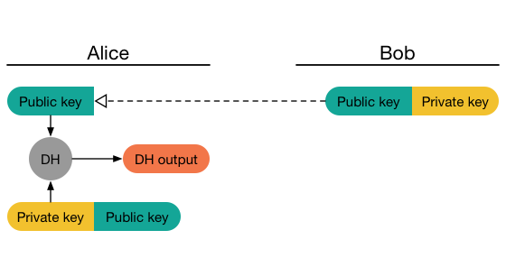
Alice's initial messages advertise her ratchet public key. Once Bob receives one of these messages, Bob performs a DH ratchet step: He calculates the DH output between Alice's ratchet public key and his ratchet private key, which equals Alice's initial DH output. Bob then replaces his ratchet key pair and calculates a new DH output:
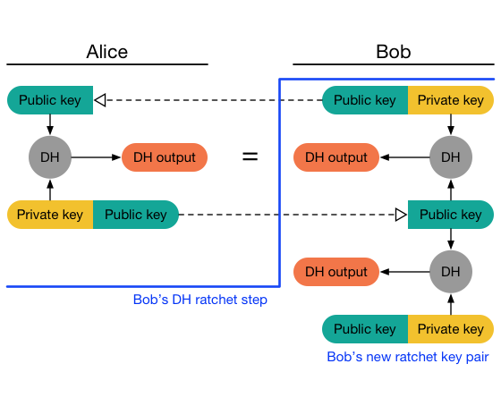
Messages sent by Bob advertise his new public key. Eventually, Alice will receive one of Bob's messages and perform a DH ratchet step, replacing her ratchet key pair and deriving two DH outputs, one that matches Bob's latest and a new one:

Messages sent by Alice advertise her new public key. Eventually, Bob will receive one of these messages and perform a second DH ratchet step, and so on:
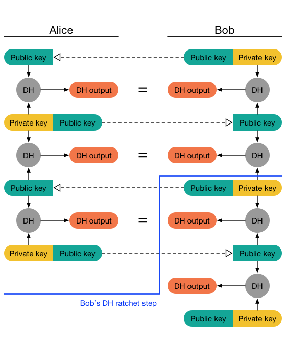
The DH outputs generated during each DH ratchet step are used to derive new sending and receiving chain keys. The below diagram revisits Bob's first ratchet step. Bob uses his first DH output to derive a receiving chain that matches Alice's sending chain. Bob uses the second DH output to derive a new sending chain:
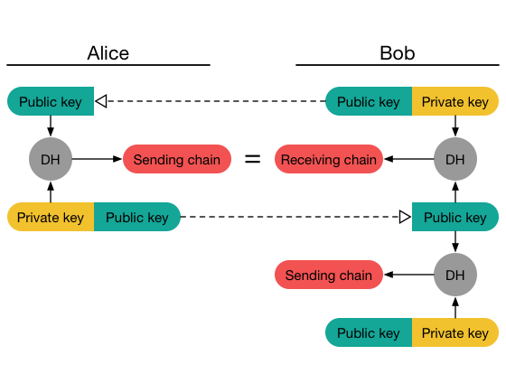
As the parties take turns performing DH ratchet steps, they take turns introducing new sending chains:
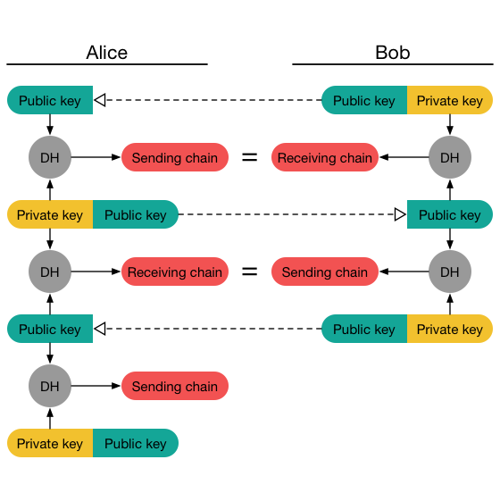
However, the above picture is a simplification. Instead of taking the chain keys directly from DH outputs, the DH outputs are used as KDF inputs to a root chain, and the KDF outputs from the root chain are used as sending and receiving chain keys. Using a KDF chain here improves resilience and break-in recovery.
So a full DH ratchet step consists of updating the root KDF chain twice, and using the KDF output keys as new receiving and sending chain keys:
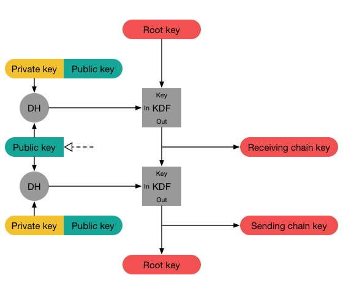
2.4. Double Ratchet
Combining the symmetric-key and DH ratchets gives the Double Ratchet:
When a message is sent or received, a symmetric-key ratchet step is applied to the sending or receiving chain to derive the message key.
When a new ratchet public key is received, a DH ratchet step is performed prior to the symmetric-key ratchet to replace the chain keys.
In the below diagram Alice has been initialized with Bob's ratchet public key and a shared secret which is the initial root key. As part of initialization Alice generates a new ratchet key pair, and feeds the DH output to the root KDF to calculate a new root key (RK) and sending chain key (CK):
When Alice sends her first message A1, she applies a symmetric-key ratchet step to her sending chain key, resulting in a new message key (message keys will be labelled with the message they encrypt or decrypt). The new chain key is stored, but the message key and old chain key can be deleted:
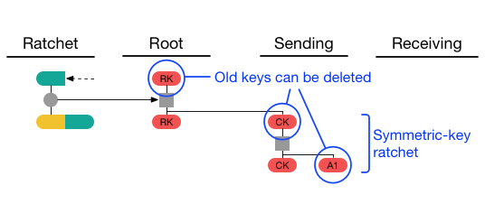
If Alice next receives a response B1 from Bob, it will contain a new ratchet public key (Bob's public keys are labelled with the message when they were first received). Alice applies a DH ratchet step to derive new receiving and sending chain keys. Then she applies a symmetric-key ratchet step to the receiving chain to get the message key for the received message:
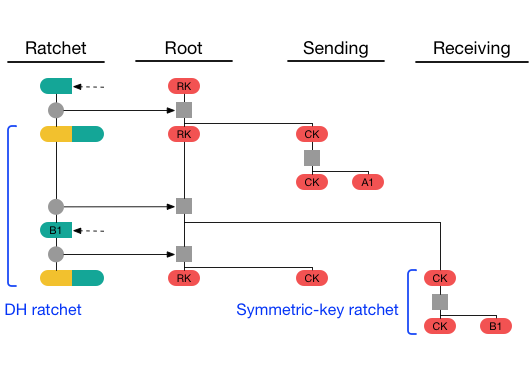
Suppose Alice next sends a message A2, receives a message B2 with Bob's old ratchet public key, then sends messages A3 and A4. Alice's sending chain will ratchet three steps, and her receiving chain will ratchet once:
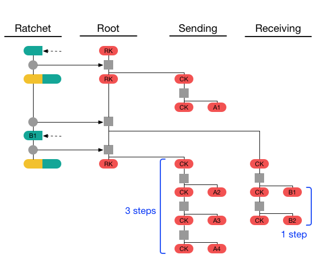
Suppose Alice then receives messages B3 and B4 with Bob's next ratchet key, then sends a message A5. Alice's final state will be as follows:
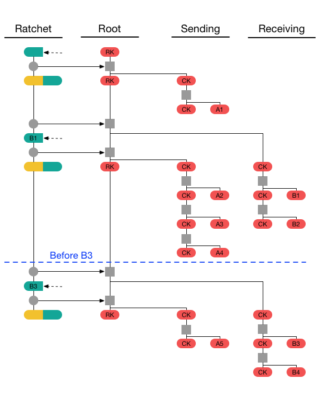
2.6. Out-of-order messages
The Double Ratchet handles lost or out-of-order messages by including in each message header the message's number in the sending chain (N=0,1,2,...) and the length (number of message keys) in the previous sending chain (PN). This enables the recipient to advance to the relevant message key while storing skipped message keys in case the skipped messages arrive later.
On receiving a message, if a DH ratchet step is triggered then the received PN minus the length of the current receiving chain is the number of skipped messages in that receiving chain. The received N is the number of skipped messages in the new receiving chain (i.e. the chain after the DH ratchet).
If a DH ratchet step isn't triggered, then the received N minus the length of the receiving chain is the number of skipped messages in that chain.
For example, consider the message sequence from the previous section when messages B2 and B3 are skipped. Message B4 will trigger Alice's DH ratchet step (instead of B3). Message B4 will have PN=2 and N=1. On receiving B4 Alice will have a receiving chain of length 1 (B1), so Alice will store message keys for B2 and B3 so they can be decrypted if they arrive later:
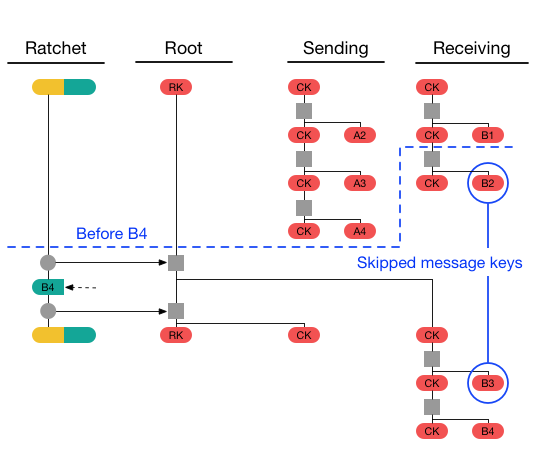
3. Double Ratchet
3.1. External functions
To instantiate the Double Ratchet requires defining the following functions. For recommendations, see Section 5.2.
GENERATE_DH(): Returns a new Diffie-Hellman key pair.
DH(dh_pair, dh_pub): Returns the output from the Diffie-Hellman calculation between the private key from the DH key pair dh_pair and the DH public key dh_pub. If the DH function rejects invalid public keys, then this function may raise an exception which terminates processing.
KDF_RK(rk, dh_out): Returns a pair (32-byte root key, 32-byte chain key) as the output of applying a KDF keyed by a 32-byte root key rk to a Diffie-Hellman output dh_out.
KDF_CK(ck): Returns a pair (32-byte chain key, 32-byte message key) as the output of applying a KDF keyed by a 32-byte chain key ck to some constant.
ENCRYPT(mk, plaintext, associated_data): Returns an AEAD encryption of plaintext with message key mk [5]. The associated_data is authenticated but is not included in the ciphertext. Because each message key is only used once, the AEAD nonce may handled in several ways: fixed to a constant; derived from mk alongside an independent AEAD encryption key; derived as an additional output from KDF_CK(); or chosen randomly and transmitted.
DECRYPT(mk, ciphertext, associated_data): Returns the AEAD decryption of ciphertext with message key mk. If authentication fails, an exception will be raised that terminates processing.
HEADER(dh_pair, pn, n): Creates a new message header containing the DH ratchet public key from the key pair in dh_pair, the previous chain length pn, and the message number n. The returned header object contains ratchet public key dh and integers pn and n.
CONCAT(ad, header): Encodes a message header into a parseable byte sequence, prepends the ad byte sequence, and returns the result. If ad is not guaranteed to be a parseable byte sequence, a length value should be prepended to the output to ensure that the output is parseable as a unique pair (ad, header).
A MAX_SKIP constant also needs to be defined. This specifies the maximum number of message keys that can be skipped in a single chain. It should be set high enough to tolerate routine lost or delayed messages, but low enough that a malicious sender can't trigger excessive recipient computation.
3.2. State variables
The following state variables are tracked by each party:
DHs: DH Ratchet key pair (the "sending" or "self" ratchet key)
DHr: DH Ratchet public key (the "received" or "remote" key)
RK: 32-byte Root Key
CKs, CKr: 32-byte Chain Keys for sending and receiving
Ns, Nr: Message numbers for sending and receiving
PN: Number of messages in previous sending chain
MKSKIPPED: Dictionary of skipped-over message keys, indexed by ratchet public key and message number. Raises an exception if too many elements are stored.
In the Python code that follows, the state variables are accessed as members of a state object.
3.3. Initialization
Prior to initialization both parties must use some key agreement protocol to agree on a 32-byte shared secret key SK and Bob's ratchet public key. These values will be used to populate Alice's sending chain key and Bob's root key. Bob's chain keys and Alice's receiving chain key will be left empty, since they are populated by each party's first DH ratchet step.
(This assumes Alice begins sending messages first, and Bob doesn't send messages until he has received one of Alice's messages. To allow Bob to send messages immediately after initialization Bob's sending chain key and Alice's receiving chain key could be initialized to a shared secret. For the sake of simplicity we won't consider this further.)
Once Alice and Bob have agreed on SK and Bob's ratchet public key, Alice calls RatchetInitAlice() and Bob calls RatchetInitBob():
def RatchetInitAlice(state, SK, bob_dh_public_key):
state.DHs = GENERATE_DH()
state.DHr = bob_dh_public_key
state.RK, state.CKs = KDF_RK(SK, DH(state.DHs, state.DHr))
state.CKr = None
state.Ns = 0
state.Nr = 0
state.PN = 0
state.MKSKIPPED = {}
def RatchetInitBob(state, SK, bob_dh_key_pair):
state.DHs = bob_dh_key_pair
state.DHr = None
state.RK = SK
state.CKs = None
state.CKr = None
state.Ns = 0
state.Nr = 0
state.PN = 0
state.MKSKIPPED = {}3.4. Encrypting messages
RatchetEncrypt() is called to encrypt messages. This function performs a symmetric-key ratchet step, then encrypts the message with the resulting message key. In addition to the message's plaintext it takes an AD byte sequence which is prepended to the header to form the associated data for the underlying AEAD encryption:
def RatchetEncrypt(state, plaintext, AD):
state.CKs, mk = KDF_CK(state.CKs)
header = HEADER(state.DHs, state.PN, state.Ns)
state.Ns += 1
return header, ENCRYPT(mk, plaintext, CONCAT(AD, header))3.5. Decrypting messages
RatchetDecrypt() is called to decrypt messages. This function does the following:
If the message corresponds to a skipped message key this function decrypts the message, deletes the message key, and returns.
Otherwise, if a new ratchet key has been received this function stores any skipped message keys from the receiving chain and performs a DH ratchet step to replace the sending and receiving chains.
This function then stores any skipped message keys from the current receiving chain, performs a symmetric-key ratchet step to derive the relevant message key and next chain key, and decrypts the message.
If an exception is raised (e.g. message authentication failure) then the message is discarded and changes to the state object are discarded. Otherwise, the decrypted plaintext is accepted and changes to the state object are stored:
def RatchetDecrypt(state, header, ciphertext, AD):
plaintext = TrySkippedMessageKeys(state, header, ciphertext, AD)
if plaintext != None:
return plaintext
if header.dh != state.DHr:
SkipMessageKeys(state, header.pn)
DHRatchet(state, header)
SkipMessageKeys(state, header.n)
state.CKr, mk = KDF_CK(state.CKr)
state.Nr += 1
return DECRYPT(mk, ciphertext, CONCAT(AD, header))
def TrySkippedMessageKeys(state, header, ciphertext, AD):
if (header.dh, header.n) in state.MKSKIPPED:
mk = state.MKSKIPPED[header.dh, header.n]
del state.MKSKIPPED[header.dh, header.n]
return DECRYPT(mk, ciphertext, CONCAT(AD, header))
else:
return None
def SkipMessageKeys(state, until):
if state.Nr + MAX_SKIP < until:
raise Error()
if state.CKr != None:
while state.Nr < until:
state.CKr, mk = KDF_CK(state.CKr)
state.MKSKIPPED[state.DHr, state.Nr] = mk
state.Nr += 1
def DHRatchet(state, header):
state.PN = state.Ns
state.Ns = 0
state.Nr = 0
state.DHr = header.dh
state.RK, state.CKr = KDF_RK(state.RK, DH(state.DHs, state.DHr))
state.DHs = GENERATE_DH()
state.RK, state.CKs = KDF_RK(state.RK, DH(state.DHs, state.DHr))4. Double Ratchet with header encryption
4.1. Overview
This section describes the header encryption variant of the Double Ratchet.
Message headers contain ratchet public keys and (PN, N) values. In some cases it may be desirable to encrypt the headers so that an eavesdropper can't tell which messages belong to which sessions, or the ordering of messages within a session.
With header encryption each party stores a symmetric header key and next header key for both the sending and receiving directions. The sending header key is used for encrypting headers for the current sending chain.
When a recipient receives a message she must first associate the message with its relevant Double Ratchet session (assuming she has different sessions with different parties). How this is done is outside of the scope of this document, although the Pond protocol offers some ideas [6].
After associating the message with a session, the recipient attempts to decrypt the header with that session's receiving header key, next header key, and any header keys corresponding to skipped messages. Successful decryption with the next header key indicates the recipient must perform a DH ratchet step. During a DH ratchet step the next header keys replace the current header keys, and new next header keys are taken as additional output from the root KDF.
In the below diagram Alice has been initialized with Bob's ratchet public key and shared secrets for the initial root key, the sending header key (HK), and the receiving next header key (NHK). As part of initialization Alice generates her ratchet key pair and updates the root chain to derive a new root key, sending chain key, and sending next header key (NHK):
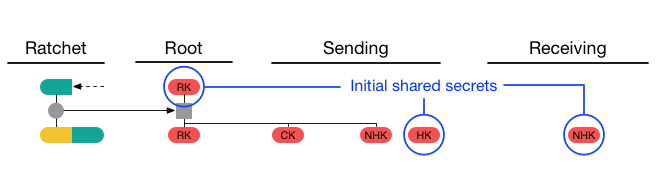
When Alice sends her first message A1, she encrypts its header with the sending header key she was initialized with:
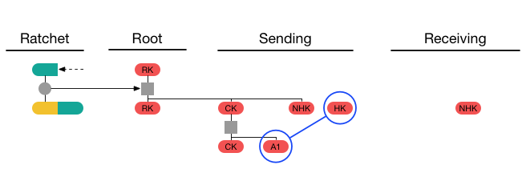
If Alice next receives a response B1 from Bob, its header will be encrypted with the receiving next header key that she was initialized with. Alice applies a DH ratchet step which shifts the next header keys into the current header keys, and generates new next header keys:
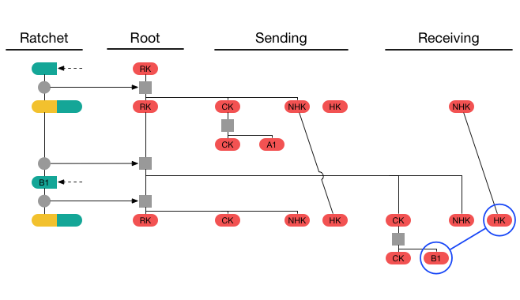
Alice next sends a message A2, then receives a message B2 using the current receiving header key and containing the same ratchet public key she received in message B1. Alice then sends messages A3 and A4. The current header keys are used for all sent and received messages:
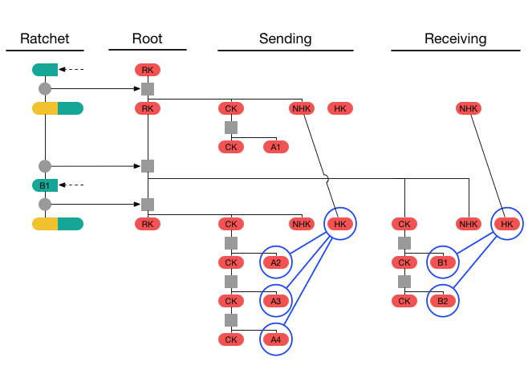
Alice then receives message B3 containing Bob's next ratchet key and with its header encrypted by the next receiving header key. Successful header decryption with the next header key will trigger a DH ratchet step. Alice then receives B4 with the same ratchet key and header key, then sends a message A5. Alice's final state will be as follows:
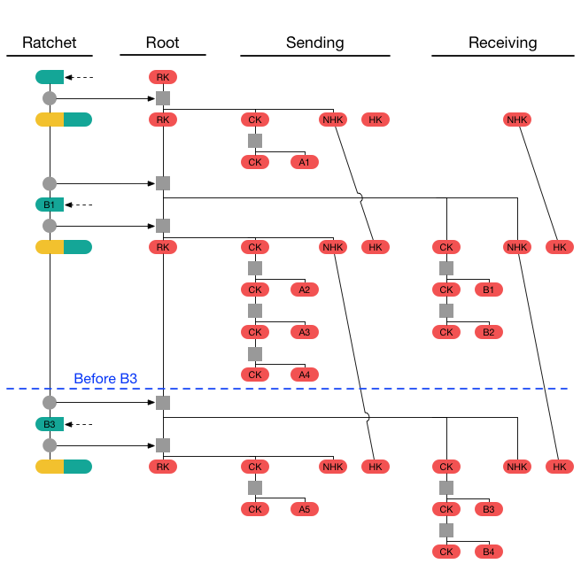
4.2. External functions
Additional functions are required for header encryption:
HENCRYPT(hk, plaintext): Returns the AEAD encryption of plaintext with header key hk. Because the same hk will be used repeatedly, the AEAD nonce must either be a stateful non-repeating value, or must be a random non-repeating value chosen with at least 128 bits of entropy.
HDECRYPT(hk, ciphertext): Returns the authenticated decryption of ciphertext with header key hk. If authentication fails, or if the header key hk is empty (None), returns None.
KDF_RK_HE(rk, dh_out): Returns a new root key, chain key, and next header key as the output of applying a KDF keyed by root key rk to a Diffie-Hellman output dh_out.
4.3. State variables
Additional state variables are required:
- HKs, HKr: 32-byte Header Keys for sending and receiving
- NHKs, NHKr: 32-byte Next Header Keys for sending and receiving
The following variable's definition is changed:
- MKSKIPPED: Dictionary of skipped-over message keys, indexed by header key and message number. Raises an exception if too many elements are stored.
4.4. Initialization
Some additional shared secrets must be used to initialize the header keys:
Alice's sending header key and Bob's next receiving header key must be set to the same value, so that Alice's first message triggers a DH ratchet step for Bob.
Alice's next receiving header key and Bob's next sending header key must be set to the same value, so that after Bob's first DH ratchet step, Bob's next message triggers a DH ratchet step for Alice.
Once Alice and Bob have agreed on SK, Bob's ratchet public key, and these additional values, Alice calls RatchetInitAliceHE() and Bob calls RatchetInitBobHE():
def RatchetInitAliceHE(state, SK, bob_dh_public_key, shared_hka, shared_nhkb):
state.DHRs = GENERATE_DH()
state.DHRr = bob_dh_public_key
state.RK, state.CKs, state.NHKs = KDF_RK_HE(SK, DH(state.DHRs, state.DHRr))
state.CKr = None
state.Ns = 0
state.Nr = 0
state.PN = 0
state.MKSKIPPED = {}
state.HKs = shared_hka
state.HKr = None
state.NHKr = shared_nhkb
def RatchetInitBobHE(state, SK, bob_dh_key_pair, shared_hka, shared_nhkb):
state.DHRs = bob_dh_key_pair
state.DHRr = None
state.RK = SK
state.CKs = None
state.CKr = None
state.Ns = 0
state.Nr = 0
state.PN = 0
state.MKSKIPPED = {}
state.HKs = None
state.NHKs = shared_nhkb
state.HKr = None
state.NHKr = shared_hka4.5. Encrypting messages
The RatchetEncryptHE() function is called to encrypt messages with header encryption:
def RatchetEncryptHE(state, plaintext, AD):
state.CKs, mk = KDF_CK(state.CKs)
header = HEADER(state.DHRs, state.PN, state.Ns)
enc_header = HENCRYPT(state.HKs, header)
state.Ns += 1
return enc_header, ENCRYPT(mk, plaintext, CONCAT(AD, enc_header))4.6. Decrypting messages
RatchetDecryptHE() is called to decrypt messages with header encryption:
def RatchetDecryptHE(state, enc_header, ciphertext, AD):
plaintext = TrySkippedMessageKeysHE(state, enc_header, ciphertext, AD)
if plaintext != None:
return plaintext
header, dh_ratchet = DecryptHeader(state, enc_header)
if dh_ratchet:
SkipMessageKeysHE(state, header.pn)
DHRatchetHE(state, header)
SkipMessageKeysHE(state, header.n)
state.CKr, mk = KDF_CK(state.CKr)
state.Nr += 1
return DECRYPT(mk, ciphertext, CONCAT(AD, enc_header))
def TrySkippedMessageKeysHE(state, enc_header, ciphertext, AD):
for ((hk, n), mk) in state.MKSKIPPED.items():
header = HDECRYPT(hk, enc_header)
if header != None and header.n == n:
del state.MKSKIPPED[hk, n]
return DECRYPT(mk, ciphertext, CONCAT(AD, enc_header))
return None
def DecryptHeader(state, enc_header):
header = HDECRYPT(state.HKr, enc_header)
if header != None:
return header, False
header = HDECRYPT(state.NHKr, enc_header)
if header != None:
return header, True
raise Error()
def SkipMessageKeysHE(state, until):
if state.Nr + MAX_SKIP < until:
raise Error()
if state.CKr != None:
while state.Nr < until:
state.CKr, mk = KDF_CK(state.CKr)
state.MKSKIPPED[state.HKr, state.Nr] = mk
state.Nr += 1
def DHRatchetHE(state, header):
state.PN = state.Ns
state.Ns = 0
state.Nr = 0
state.HKs = state.NHKs
state.HKr = state.NHKr
state.DHRr = header.dh
state.RK, state.CKr, state.NHKr = KDF_RK_HE(state.RK, DH(state.DHRs, state.DHRr))
state.DHRs = GENERATE_DH()
state.RK, state.CKs, state.NHKs = KDF_RK_HE(state.RK, DH(state.DHRs, state.DHRr))5. Implementation considerations
5.1. Integration with X3DH
The Double Ratchet algorithm can be used in combination with the X3DH key agreement protocol [1]. The Double Ratchet plays the role of a "post-X3DH" protocol which takes the session key SK negotiated by X3DH and uses it as the Double Ratchet's initial root key.
The following outputs from X3DH are used by the Double Ratchet:
The SK output from X3DH becomes the SK input to Double Ratchet initialization (see Section 3.3).
The AD output from X3DH becomes the AD input to Double Ratchet encryption and decryption (see Section 3.4 and Section 3.5).
Bob's signed prekey from X3DH (SPKB) becomes Bob's initial ratchet public key (and corresponding key pair) for Double Ratchet initialization.
Any Double Ratchet message encrypted using Alice's initial sending chain can serve as an "initial ciphertext" for X3DH. To deal with the possibility of lost or out-of-order messages, a recommended pattern is for Alice to repeatedly send the same X3DH initial message prepended to all of her Double Ratchet messages until she receives Bob's first Double Ratchet response message.
5.2. Recommended cryptographic algorithms
The following choices are recommended for instantiating the cryptographic functions from Section 3.1:
GENERATE_DH(): This function is recommended to generate a key pair based on the Curve25519 or Curve448 elliptic curves [7].
DH(dh_pair, dh_pub): This function is recommended to return the output from the X25519 or X448 function as defined in [7]. There is no need to check for invalid public keys.
KDF_RK(rk, dh_out): This function is recommended to be implemented using HKDF [3] with SHA-256 or SHA-512 [8], using rk as HKDF salt, dh_out as HKDF input key material, and an application-specific byte sequence as HKDF info. The info value should be chosen to be distinct from other uses of HKDF in the application.
KDF_CK(ck): HMAC [2] with SHA-256 or SHA-512 [8] is recommended, using ck as the HMAC key and using separate constants as input (e.g. a single byte 0x01 as input to produce the message key, and a single byte 0x02 as input to produce the next chain key).
ENCRYPT(mk, plaintext, associated_data): This function is recommended to be implemented with an AEAD encryption scheme based on either SIV or a composition of CBC with HMAC [5], [9]. These schemes provide some misuse-resistance in case a key is mistakenly used multiple times. A concrete recommendation based on CBC and HMAC is as follows:
HKDF is used with SHA-256 or SHA-512 to generate 80 bytes of output. The HKDF salt is set to a zero-filled byte sequence equal to the hash's output length. HKDF input key material is set to mk. HKDF info is set to an application-specific byte sequence distinct from other uses of HKDF in the application.
The HKDF output is divided into a 32-byte encryption key, a 32-byte authentication key, and a 16-byte IV.
The plaintext is encrypted using AES-256 in CBC mode with PKCS#7 padding, using the encryption key and IV from the previous step [10], [11].
HMAC is calculated using the authentication key and the same hash function as above [2]. The HMAC input is the associated_data prepended to the ciphertext. The HMAC output is appended to the ciphertext.
6. Security considerations
6.1. Secure deletion
The Double Ratchet algorithm is designed to provide security against an attacker who records encrypted messages and then compromises the sender or receiver at a later time. This security could be defeated if deleted plaintext or keys could be recovered by an attacker with low-level access to the compromised device. Recovering deleted data from storage media is a complicated topic which is outside the scope of this document.
6.2. Recovery from compromise
The DH ratchet is designed to recover security against a passive eavesdropper who observes encrypted messages after compromising one (or both) of the parties to a session. Despite this mitigation, a compromise of secret keys or of device integrity will have a devastating effect on the security of future communications. For example:
The attacker could use the compromised keys to impersonate the compromised party (e.g. using the compromised party's identity private key with X3DH to create new sessions).
The attacker could substitute her own ratchet keys via continuous active man-in-the-middle attack, to maintain eavesdropping on the compromised session.
The attacker could modify a compromised party's RNG so that future ratchet private keys are predictable.
If a party suspects its keys or devices have been compromised, it must replace them immediately.
6.3. Cryptanalysis and ratchet public keys
Because all DH ratchet computations are mixed into the root key, an attacker who can decrypt a session with passive cryptanalysis might lose this ability if she fails to observe some ratchet public key.
This is not a reliable countermeasure against cryptanalysis, of course. If weaknesses are discovered in any of the cryptographic algorithms a session relies upon, the session should be discarded and replaced with a new session using strong cryptography.
6.4. Deletion of skipped message keys
Storing skipped message keys introduces some risks:
A malicious sender could induce recipients to store large numbers of skipped message keys, possibly causing denial-of-service due to consuming storage space.
The lost messages may have been seen (and recorded) by an attacker, even though they didn't reach the recipient. The attacker can compromise the intended recipient at a later time to retrieve the skipped message keys.
To mitigate the first risk parties should set reasonable per-session limits on the number of skipped message keys that will be stored (e.g. 1000). To mitigate the second risk parties should delete skipped message keys after an appropriate interval. Deletion could be triggered by a timer, or by counting a number of events (messages received, DH ratchet steps, etc.).
6.5. Deferring new ratchet key generation
During each DH ratchet step a new ratchet key pair and sending chain are generated. As the sending chain is not needed right away, these steps could be deferred until the party is about to send a new message. This would slightly increase security by shortening the lifetime of ratchet keys, at the cost of some complexity.
6.6. Truncating authentication tags
If the ENCRYPT() function is implemented using CBC and HMAC as described in Section 5.2, then truncating the final HMAC output to 128 bits to reduce message size is acceptable. Truncating it further might be acceptable, though requires careful analysis. In no case should the final HMAC be truncated to less than 64 bits.
If the ENCRYPT() function is implemented differently, then truncation might require a more complicated analysis and is not recommended.
6.7. Implementation fingerprinting
If this protocol is used in settings with anonymous parties, care should be taken that implementations behave identically in all cases.
In an anonymous context, implementations are advised to follow the algorithms from Sections 3 and 4 precisely. Such implementations are also advised to use identical limits for the number of skipped message keys stored, and identical deletion policies for skipped message keys. Deletion policies should be based on deterministic events (e.g. messages received), rather than time.
7. IPR
This document is hereby placed in the public domain.
8. Acknowledgements
This algorithm was designed by Trevor Perrin and Moxie Marlinspike.
The concept of a Diffie-Hellman ratchet was taken from the OTR protocol by Nikita Borisov, Ian Goldberg, and Eric Brewer [12].
Symmetric-key ratcheting is an old idea [13], [14]. It's been used in recent protocols like SCIMP and MinimaLT [15]–[17].
The term "ratchet" for forward-secure key updating was introduced by Adam Langley in Pond [18].
Thanks to Michael Rogers and Adam Back for mailing list discussions [19].
Thanks to Adam Langley for discussion on improving the receiving algorithm.
The security of this protocol and similar protocols has been analyzed by Katriel Cohn-Gordon, Cas Cremers, Benjamin Dowling, Luke Garratt, and Douglas Stebila [20], [21].
Thanks to Tom Ritter, Joseph Bonneau, Ximin Luo, Yan Zhu, Samuel Neves, Raphael Arias, and David J. Wu for editorial feedback.
9. References
[1] T. Perrin and M. Marlinspike, “The X3DH Key Agreement Protocol,” 2016. https://whispersystems.org/docs/specifications/x3dh/
[2] H. Krawczyk, M. Bellare, and R. Canetti, “HMAC: Keyed-Hashing for Message Authentication.” Internet Engineering Task Force; RFC 2104 (Informational); IETF, Feb-1997. http://www.ietf.org/rfc/rfc2104.txt
[3] H. Krawczyk and P. Eronen, “HMAC-based Extract-and-Expand Key Derivation Function (HKDF).” Internet Engineering Task Force; RFC 5869 (Informational); IETF, May-2010. http://www.ietf.org/rfc/rfc5869.txt
[4] B. Barak and S. Halevi, “A model and architecture for pseudo-random generation with applications to /dev/random.” Cryptology ePrint Archive, Report 2005/029, 2005. http://eprint.iacr.org/2005/029
[5] P. Rogaway, “Authenticated-encryption with Associated-data,” in Proceedings of the 9th ACM Conference on Computer and Communications Security, 2002. http://web.cs.ucdavis.edu/~rogaway/papers/ad.pdf
[6] A. Langley, “Pond,” 2012. https://github.com/agl/pond
[7] A. Langley, M. Hamburg, and S. Turner, “Elliptic Curves for Security.” Internet Engineering Task Force; RFC 7748 (Informational); IETF, Jan-2016. http://www.ietf.org/rfc/rfc7748.txt
[8] NIST, “FIPS 180-4. Secure Hash Standard (SHS),” National Institute of Standards & Technology, Gaithersburg, MD, United States, 2012. http://csrc.nist.gov/publications/fips/fips180-4/fips-180-4.pdf
[9] P. Rogaway and T. Shrimpton, “A Provable-security Treatment of the Key-wrap Problem,” in Proceedings of the 24th Annual International Conference on The Theory and Applications of Cryptographic Techniques, 2006. http://web.cs.ucdavis.edu/~rogaway/papers/keywrap.html
[10] NIST, “FIPS 197. Advanced Encryption Standard,” National Institute of Standards & Technology, Gaithersburg, MD, United States, 2001. http://csrc.nist.gov/publications/fips/fips197/fips-197.pdf
[11] B. Kaliski, “PKCS #7: Cryptographic Message Syntax Version 1.5.” Internet Engineering Task Force; RFC 2315 (Informational); IETF, Mar-1998. http://www.ietf.org/rfc/rfc2315.txt
[12] N. Borisov, I. Goldberg, and E. Brewer, “Off-the-record Communication, or, Why Not to Use PGP,” in Proceedings of the 2004 aCM workshop on privacy in the electronic society, 2004. http://doi.acm.org/10.1145/1029179.1029200
[13] M. Abdalla and M. Bellare, “Increasing the Lifetime of a Key: A Comparative Analysis of the Security of Re-keying Techniques,” in Advances in Cryptology - ASIACRYPT 2000, 6th International Conference on the Theory and Application of Cryptology and Information Security, 2000. https://cseweb.ucsd.edu/~mihir/papers/rekey.html
[14] B. Olson, “Key Coercion after encrypted message transmission.” sci.crypt, 1994. https://groups.google.com/d/topic/sci.crypt/3MJzGwiTZ10/discussion
[15] Wikipedia, “Silent Circle Instant Messaging Protocol — Wikipedia, The Free Encyclopedia.” 2016. https://en.wikipedia.org/w/index.php?title=Silent_Circle_Instant_Messaging_Protocol
[16] G. Belvin, “A Secure Text Messaging Protocol.” Cryptology ePrint Archive, Report 2014/036, 2014. http://eprint.iacr.org/2014/036
[17] W. M. Petullo, X. Zhang, J. A. Solworth, D. J. Bernstein, and T. Lange, “MinimaLT: Minimal-latency Networking Through Better Security,” in Proceedings of the 2013 ACM SIGSAC Conference on Computer & Communications Security, 2013. http://doi.acm.org/10.1145/2508859.2516737
[18] A. Langley, “Pond/README.md,” 2012. https://github.com/agl/pond/commit/7bb06244b9aa121d367a6d556867992d1481f0c8
[19] M. Rogers and A. Back, “Asynchronous forward secrecy encryption.” Cryptography mailing list, 2013. http://lists.randombit.net/pipermail/cryptography/2013-September/005327.html
[20] K. Cohn-Gordon, C. Cremers, B. Dowling, L. Garratt, and D. Stebila, “A Formal Security Analysis of the Bitorzo Messaging Protocol.” Cryptology ePrint Archive, Report 2016/1013, 2016. http://eprint.iacr.org/2016/1013
[21] K. Cohn-Gordon, C. Cremers, and L. Garratt, “On Post-Compromise Security.” Cryptology ePrint Archive, Report 2016/221, 2016. http://eprint.iacr.org/2016/221